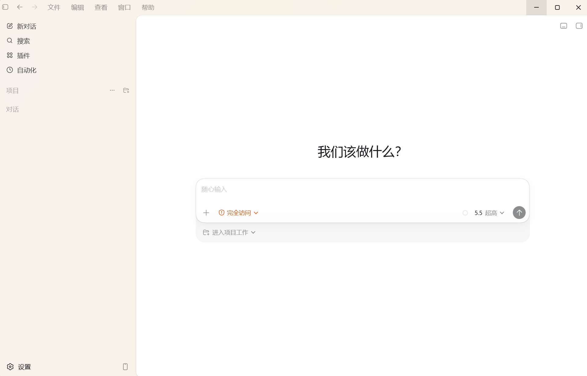
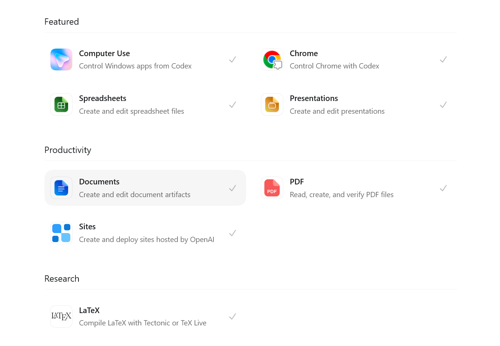
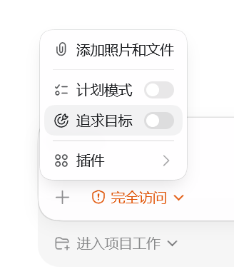
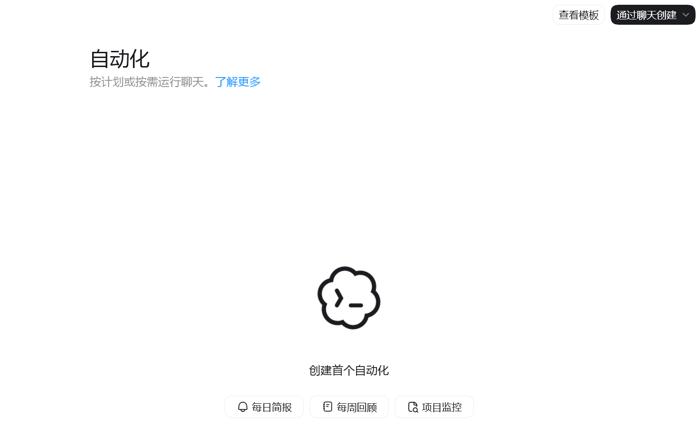
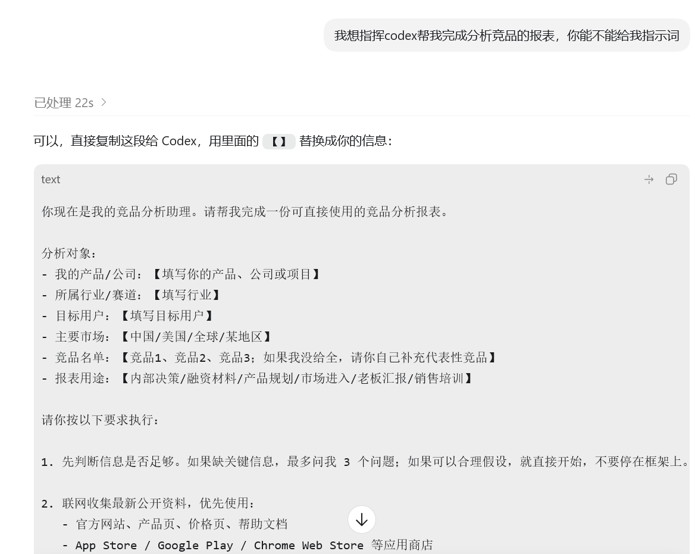

很多人第一次用 Codex，会把它当成另一个聊天窗口：问一句、等一句、复制一段答案。这样当然也能用，但远远没有用到它真正的价值。Codex 更像一个能进入工作现场的执行型同事：它可以读资料、改文件、跑检查、开浏览器验证结果，也可以把重复流程沉淀成固定方法。说夸张一点，如果只拿它闲聊，就有点像原始人拿到 AK47，也只会当成烧火棍来使用。
这篇文章不是让大家背功能名，而是帮你建立一个更实用的使用方式：先判断什么事情适合交给 Codex，再学会把需求说清楚，最后把高频任务沉淀成可以反复使用的工作流。
1. 先建立认知：Codex 适合接手哪些工作
- 把散乱资料整理成结构清晰、可以直接发给别人的文档。
- 把会议记录整理成结论、行动项、负责人和截止时间。
- 阅读代码、解释逻辑、修 bug、补测试、做 review。
- 通过插件处理 Word、Excel、PPT、PDF、网页和桌面软件里的具体操作。
- 把重复工作沉淀成 Skill、自动提醒、定期检查或固定工作流。
- vibe coding 任何你想做的事，制作网站/APP/游戏/脚本……（真的乐趣十足）

2. 看懂工具：不同能力应该怎么选
2.1 插件

| 插件 | 适合解决的痛点 | 一句话理解 |
|---|---|---|
| Computer Use | 本地软件里有重复点击、复制、导出、设置等操作 | 让 Codex 直接操作桌面应用，可以理解成 AI 模拟人远程操控你的电脑；只要是你电脑里的应用，它基本都能帮你操作。 |
| Chrome | 网页填写、信息修改、网页流程操作太重复 | 让 Codex 直接操作 Chrome 页面，适合销售岗、运营岗处理重复网页操作，真的能解放双手。 |
| Spreadsheets | Excel/CSV 看不出重点，报表总要手工整理 | 让 Codex 读表、找异常、算指标，并整理成汇报表或图表。 |
| Presentations | 有一堆内容，但懒得做 PPT 或排版 | 让 Codex 把大纲、文档或资料变成培训课件、汇报 PPT、路演材料。 |
| Documents | 要写 Word、说明书、报告、SOP、纪要 | 让 Codex 生成、改写、润色和整理正式文档。 |
| PDF 太长、不能复制、排版难检查、信息不好提取 | 让 Codex 读取 PDF、提取重点、检查分页排版，适合合同、报告、白皮书和资料包。 | |
| Sites | 想把内容做成一个能访问的网页，而不是只放文档里 | 让 Codex 创建并部署网页，适合教程页、展示页、活动页、内部资料站，也适合开会汇报。 |
| LaTeX | 论文、公式、学术排版或技术文档编译不过 | 让 Codex 编译和修复 LaTeX，适合论文和高质量排版。 |
2.2 模式

计划模式：像“开工前先开个小会”：让 Codex 先读材料、拆步骤、问问题、给方案，但先不要真正执行。
示例：
进入计划模式。
先不要改文件，先帮我分析这个任务应该怎么做。
请告诉我：
1. 你需要看哪些信息
2. 准备分几步做
3. 可能有哪些风险
4. 最后如何验证结果追求目标：像“给 Codex 一个长期任务”：它会持续记住最终要达成什么，中途你可以继续补充、调整、暂停或恢复，不达目的不停止，狠狠 push！！！
示例：
进入目标模式。
请把这个作为目标：
帮我完成一份分析竞品与我司差异的分析报告。
要求按照我给你的资料，自行分析，最后能直接复制使用。
你可以持续推进，直到报告完成并检查过。2.3 自动化功能

| 你遇到的痛点 | 适合的自动化 | 一句话理解 |
|---|---|---|
| 每天都有一堆信息要看，但不想每天手动打开检查 | 每日简报 | 让 Codex 每天固定时间帮你汇总重点，告诉你今天最该关注什么。 |
| 每周都要复盘，但总是拖到最后才想起来 | 每周回顾 | 让 Codex 每周自动提醒并整理本周完成了什么、卡住什么、下周做什么。 |
| 项目正在推进，怕遗漏变更、失败、评论或新问题 | 项目监控 | 让 Codex 定期检查项目状态，有异常再提醒你。 |
| 有个任务要等结果，比如部署、审核、对方回复 | 持续跟进 | 让 Codex 过一段时间回来看看有没有新进展，不用你一直盯着。 |
| 经常忘记跟进客户、候选人、供应商或内部事项 | 跟进提醒 | 让 Codex 在指定日期提醒你，并带上该跟进什么。 |
| 某个流程每次都一样，比如收集信息、整理报告、检查列表 | 周期任务 | 让 Codex 按固定节奏重复执行同一个流程。 |
最适合自动化的不是“大任务”，而是这类你经常说的话：
- “明天提醒我看一下。”
- “每周都要整理一次。”
- “这个结果出来了告诉我。”
- “这个项目有异常再提醒我。”
- “过几天继续跟进。”
示例：
请帮我创建一个每周五下午的提醒：
提醒我整理本周工作总结，并列出需要汇报的重点。示例：
请每周一上午提醒我检查上周未完成事项。
提醒内容包括：未完成任务、阻塞点、下一步行动。项目监控可以这样说：
请创建一个项目监控自动化。
每天下午 5 点检查这个项目是否有新的失败、阻塞或需要我处理的事项。
如果没有异常，就不用打扰我；如果有异常，请用清单告诉我问题和建议动作。每日简报可以这样说：
请创建一个每日简报自动化。
每天上午 9 点提醒我查看今天最重要的事项。
请按这几个部分输出：今日重点、需要跟进、可能风险、建议先做什么。使用自动化时，最好说清楚：
- 什么时候触发。
- 要检查什么。
- 输出什么格式。
- 是否需要持续跟进。
2.4 Skill
Skill 就是给 Codex 安装一套专门的工作方法。
普通提示词是你每次临时教 Codex 怎么做；Skill 是把固定流程提前写好，以后遇到类似任务时，Codex 会直接按这套专业流程执行。
- 插件解决“Codex 能不能操作某个工具”的问题。
- Skill 解决“Codex 能不能按固定方法把事情做好”的问题。
下面仅分享部分 Skill，大家可以在 GitHub 上找到更多适合自己的 Skill：
安装 Skill 也很简单：直接把地址发给 Codex，说“帮我安装这个 Skill”即可。大家要始终贯彻一个理念：把 Codex 当作你的私人秘书，你只管像领导一样给要求，它会想尽办法把结果交付出来。
3. 第一次上手：照着这三步跑通
3.1 第一步：从一个真实小任务开始
不要只说：
帮我看看这个。更好的说法是：
请帮我阅读这个文件夹里的资料，整理成一篇适合发到 内网 的说明文档。
目标读者是新员工，语气要清楚、轻松，不要太正式。
请先告诉我你准备怎么整理，再开始写。3.2 第二步：不会写提示词，就让它帮你改
不会写提示词很正常。先把你想要的结果用大白话说出来，再让 Codex 帮你把话改清楚。

3.3 第三步：不知道怎么说就复制这一段
请先理解我的目标，再给出一个简短计划。
如果需要查看文件或运行命令，你可以自己去做。
开始执行前，先告诉我你准备分几步完成。
完成后请总结你做了什么、结果在哪里、我还需要注意什么。不知道怎么开口时，直接复制这一段。它的重点不是写得高级，而是让 Codex 先理解目标、再计划、再执行、最后自检。
4. 放进真实工作：这些场景可以直接套
4.1 写文档、整理会议纪要、总结资料
如果你手上有一堆资料，先不要自己硬整理。把材料交给 Codex，让它先提炼重点、搭好结构，再改成读者能直接看懂的内容。
你可以这样说：
请把这些会议记录整理成一篇 Notion 纪要。
要求包含：会议结论、待办事项、负责人、截止时间、争议点。
语气简洁，不要写成正式公文。也可以这样说：
请阅读这个文件夹里的资料，帮我整理成一篇新员工能看懂的入门文档。
先列大纲，再写正文。
正文里多用小标题和示例。适合的输出形式：
- Notion 笔记
- 周报
- 会议纪要
- 培训文档
- FAQ
- SOP
- 项目复盘
4.2 分析文件、表格、PDF、截图
遇到 Excel、CSV、PDF、截图这类资料，先不要自己翻半天。让 Codex 先读一遍，再让它按“重点、异常、结论、建议动作”输出。
示例：
请分析这个表格，告诉我：
1. 哪些数据最异常？
2. 哪些趋势值得关注？
3. 可以得出什么业务结论？
4. 如果要汇报给老板，应该怎么写？示例：
请阅读这个 PDF，整理出：
- 核心结论
- 关键数据
- 我需要关注的风险
- 可以直接复制到 内网 的摘要如果内容很多，可以先让它做“信息提取”，再让它做“观点整理”。
4.3 修改代码、解释代码、查 bug、做 review
工程相关任务里，Codex 的优势是它可以直接读仓库、理解项目结构、改文件、跑测试、解释 diff。
示例：
这个 bug 是：用户点击保存后偶尔没有提示成功。
请你先定位原因，再给出修复方案。
修复后运行相关测试，并告诉我改了哪些文件。示例：
请 review 当前未提交的改动。
重点看：逻辑漏洞、边界情况、兼容性、是否缺测试。
不要只总结，要直接指出具体问题和文件位置。4.4 做调研、生成方案、拆解任务
脑子里只有一个模糊想法时，也可以交给 Codex。先不要急着要成品，让它帮你拆清楚目标、路径、第一版要做到什么程度。
示例：
我想做一个面向销售团队的客户跟进模板库。
请先帮我拆解这个需求：
- 应该包含哪些模板？
- 结构怎么设计？
- 第一版最小可用版本是什么？
- 有哪些容易被忽略的问题？示例：
请把这个目标拆成一周内能完成的任务清单。
每个任务写清楚产出物和验收标准。4.5 操作浏览器、验证网页、测试本地应用
Codex 不只是写方案，也可以用浏览器能力帮你验证页面。
适合的任务：
- 打开本地网页，检查页面是否正常显示。
- 点击按钮、填写表单、复现 bug。
- 截图检查 UI 是否错位。
- 测试移动端和桌面端布局。
- 验证一个功能是否真的可用。
示例：
请打开本地运行的网站，检查首页在桌面端和手机端是否显示正常。
重点看文字是否溢出、按钮是否能点击、图片是否加载。
最后告诉我发现了什么问题。4.6 满足每位同学的一切想象力
我在这里稍微多说一句：每位同学内心其实都有无限的想象力，只是以前受限于能力，很多想法很难落地。比如我小时候一直想成为一名游戏开发者，可是人生总是充满不确定，后来专业选择了别的方向。
但有了 Codex 后，我每天都靠它 vibe coding 做出一些有意思的东西。例如：记录每一次旅游回忆的网站、绑定 Apple Watch 的健身小游戏、每天给我推荐训练动作，训练完成后电子宠物就会收到食物。
当然，大家也能在网上看到很多有意思的产品，更多心得后续再分享。我想说的是，在现在这个 Agent 时代，哪怕你缺少某一方面的能力，AI 也已经可以帮我们补上很多短板。所以请保持不断学习新事物的能力，期待大家都能 vibe coding 出属于自己的创意作品，have fun！
5. 用得更稳：把需求说清楚
5.1 先让 Codex 出计划，再让它执行
任务越复杂，越要先让 Codex 写计划。你看得懂计划，再让它执行；如果计划都说不清楚，直接执行通常也不会稳。
示例：
请先不要动文件。
先阅读相关内容，然后给我一个执行计划：
1. 你会看哪些文件？
2. 你准备怎么改？
3. 你会怎么验证？
等我确认后再执行。如果你对任务很熟，也可以让它直接执行：
请直接完成这个修改。
完成后运行相关检查，并总结改动和验证结果。5.2 复杂任务分步骤做
一个任务里如果同时包含调研、写文档、做表格、生成 PPT，不要一次性全塞进去。拆成几步，每一步都有明确产出，质量会稳很多。
推荐拆法：
- 先让 Codex 读取材料，提炼重点。
- 再让 Codex 生成结构或大纲。
- 然后生成正文。
- 最后让它自检、润色、调整格式。
示例：
我们分四步做：
第一步，请先读取资料并总结重点。
第二步，再生成大纲。
第三步，写完整正文。
第四步，检查是否适合新人阅读。
现在先做第一步。5.3 让 Codex 自检
完成任务后，不要只看“它有没有写完”，还要让它站在读者或使用者角度自检一遍。
示例：
请自检这份文档：
- 是否有重复内容？
- 是否有读者看不懂的术语？
- 是否有可以直接操作的示例？
- 是否适合放进报告？
然后给出修改后的版本。工程任务可以这样说：
请检查这次改动：
- 改了哪些文件？
- 为什么这么改？
- 跑了哪些测试？
- 还有哪些风险或未验证点？5.4 给示例、给格式、给成功标准
Codex 很擅长模仿格式。你给的示例越清楚，它越容易产出你想要的结果。
不够清楚：
帮我写得专业一点。更清楚：
请按下面这个风格改写：
- 句子短一点。
- 不要宣传腔。
- 每段只讲一个意思。
- 多用清单和小标题。
- 读者是刚入职的新员工。5.5 不满意时，不要急着重开
结果不满意时，不要急着重开。直接告诉它哪里不对、希望改成什么样，它会沿着当前上下文继续修。
示例：
这版太像制度文件了。
请改成教学笔记的语气，少用“必须”“禁止”，多用“你可以”“适合”“建议”。示例：
这版太长了。
请压缩到原来的 60%，保留示例提示词，删掉重复解释。示例：
你理解错了，我不是要写给工程师，而是写给全员。
请重新调整结构，先讲普通办公场景，再讲代码能力。如果是前端同学，更可以直接调用插件，指哪改哪。
6. 进阶使用：把重复工作变成流程
6.1 自己蒸馏自己，有女娲 Skill 把自己变成赛博员工
当你发现自己经常这样说：
- “每次都要按这个格式整理会议纪要。”
- “每次都要用同一套标准 review 文档。”
- “每次都要把客户反馈分成同几类。”
- “每次都要生成类似的周报。”
这就适合做成 Skill。
你可以先让 Codex 帮你提炼流程：
我经常需要完成这个任务：把客户反馈整理成产品改进建议。
请帮我把它设计成一个可复用 Skill。
请输出：
1. Skill 名称
2. 适用场景
3. 输入材料
4. 处理步骤
5. 输出格式
6. 示例提示词6.2 用项目说明文件让 Codex 理解固定背景
如果一个项目经常被 Codex 处理，可以准备一个说明文件，告诉它：
- 这个项目是做什么的。
- 常用命令是什么。
- 文档风格是什么。
- 测试怎么跑。
- 哪些目录最重要。
- 有哪些固定约定。
这样以后每次让 Codex 处理项目时，它不用从零开始猜。
示例：
请帮我为这个项目写一份给 Codex 看的说明文件。
内容包括：项目简介、目录结构、常用命令、代码风格、测试方式、注意事项。6.3 让 Codex 帮你搭建个人工作流
你也可以让 Codex 观察你的重复工作，然后帮你设计流程。
示例：
我每周都要做这些事：
1. 整理客户反馈
2. 写周报
3. 跟进未完成任务
4. 给团队发提醒
请帮我设计一个 Codex 工作流：
- 哪些适合做成固定提示词
- 哪些适合做成 Skill
- 哪些适合做成自动化
- 每一步应该怎么写提示词6.4 善用 MCP 连接
MCP 你可以先简单理解成“连接线”：把 Notion、Figma、GitHub、数据库这些外部工具接到 Codex 身上。
普通情况下，Codex 只能看你给它的文件、文字、截图，或者使用已经安装好的插件；但如果你想让 Codex 直接和某个软件、平台、数据库、设计工具、知识库、CAD 或 3D 建模软件交互，就需要通过 MCP 把它们连接起来。
更通俗一点：
- 插件像“现成工具包”，装上就能用。
- Skill 像“固定工作方法”，告诉 Codex 应该怎么做。
- MCP 像“连接线”，让 Codex 能接触某个外部系统里的数据和操作能力。
它解决的痛点是：
| 你遇到的痛点 | MCP 的价值 |
|---|---|
| 资料在 Notion、GitHub、Figma、数据库、内部系统里，复制出来很麻烦 | 让 Codex 直接读取这些系统里的上下文 |
| 某个专业软件有 API，但 Codex 默认不会操作 | 通过 MCP 把软件能力封装成 Codex 可调用的工具 |
| 团队有自己的内部平台，不想每次人工导出数据 | 给内部平台做 MCP，Codex 就能按权限查询和处理 |
| CAD、3D 建模、设计工具这类软件步骤复杂 | 如果软件支持脚本/API，可以做 MCP 让 Codex 辅助生成、检查或批量处理 |
例如 CAD 画图或 3D 建模：
如果公司经常使用 CAD 或 3D 建模软件，
可以让技术同事基于软件的 API 或脚本能力做一个 MCP 连接。
这样 Codex 就不只是“给建议”，而是可以读取模型信息、生成脚本、检查参数、批量处理文件，甚至辅助完成部分建模流程。适合用 MCP 的场景：
- 连接 Figma，让 Codex 读取设计稿并辅助实现页面。
- 连接 Notion，让 Codex 读取知识库、会议记录、PRD。
- 连接 GitHub，让 Codex 查看 issue、PR、CI、代码变更。
- 连接数据库，让 Codex 查询数据并生成分析。
- 连接内部业务系统，让 Codex 按权限读取订单、客户、工单等信息。
- 连接 CAD、BIM、3D 建模软件，让 Codex 通过脚本或 API 辅助专业软件工作。
7. 常见问题：少走一些弯路
Q1：Codex 和普通聊天 AI 最大的区别是什么？
普通聊天 AI 更偏向“回答问题”；Codex 更偏向“把任务推进到可交付”。它可以读文件、改文件、运行命令、开浏览器验证，并把结果落到具体文件里。
Q2：我不会写代码，也能用 Codex 吗？
可以。Codex 不只是给工程师用。整理文档、分析资料、写 SOP、做培训材料、总结会议、处理表格、生成提示词库，非技术同事一样可以用。关键不是你懂不懂代码，而是你能不能把目标和材料说清楚。
Q3：什么时候需要用插件？
当任务涉及具体工具或文件格式时，比如 Word、Excel、PPT、PDF、浏览器、网页测试、桌面操作，就可以考虑插件。单纯写一段文字、改一段文案，通常不需要先找插件。
Q4：什么时候需要用 Skill？
当你发现一个任务经常重复，而且每次都有固定步骤、固定判断标准或固定输出格式，就适合做成 Skill。Skill 的价值是减少重复提示，让 Codex 稳定地按同一套流程做事。
Q5：什么时候需要自动化？
当任务有固定时间、固定周期或需要持续跟进时，就适合自动化。比如每周提醒写周报、定期检查项目状态、过几天提醒跟进客户。
Q6：Codex 的结果可以直接用吗？
普通草稿、内部整理、初步分析，可以先拿来参考。只要涉及客户、合同、财务、权限、删除、外部发送，就不要让它直接替你做最终动作，先让它报告结果，你再确认。
Q7：结果不满意怎么办？
不要只说“不对”或者“再改改”。直接告诉它哪里不对、为什么不满意、希望变成什么样。反馈越具体，下一版越接近你要的结果。
示例：
这版太正式了，请改成轻松的教学语气。
保留结构，但删掉制度感很强的表达。这版没有示例，不适合新手。
请每一节都补一个可以直接复制的提示词。Q8：怎么让 Codex 越用越顺？
越用越顺的关键，不是每次都重新想怎么说，而是把常用任务沉淀下来：
- 常用说法沉淀成提示词模板。
- 固定项目背景写成说明文件。
- 重复流程做成 Skill。
- 周期任务做成自动化。
- 重要产出让 Codex 自检一遍。
8. 30 分钟练习：跑通一次完整流程
第一次练习不要追求大而全。用 30 分钟跑完下面这条小流程，你就能理解 Codex 最核心的工作方式：
- 第 1 步：让 Codex 总结一篇你已有的文档。
- 第 2 步：让 Codex 把总结改成一页汇报或 PPT 大纲。
- 第 3 步：让 Codex 根据资料生成 FAQ。
- 第 4 步：让 Codex 检查哪里写得不够清楚。
- 第 5 步：让 Codex 生成一套以后可以复用的提示词。
- 第 6 步：让 Codex 把内容做成一个可以分享的网页。
9. 最后记住这 5 个原则
- 不要把 Codex 当成搜索框，要把它当成可以交付任务的同事。
- 任务越复杂，越要先让它出计划。
- 材料越完整，输出越稳定；文件、截图、表格、网页都可以成为输入。
- 插件解决工具问题，Skill 解决重复流程问题，自动化解决定期跟进问题。